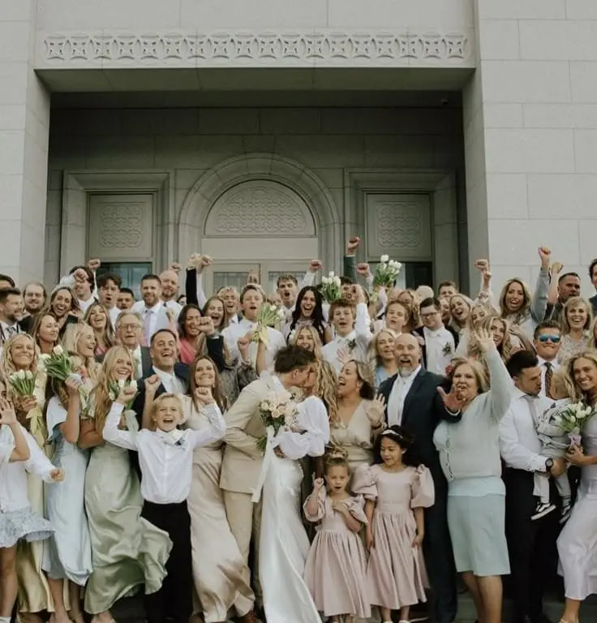
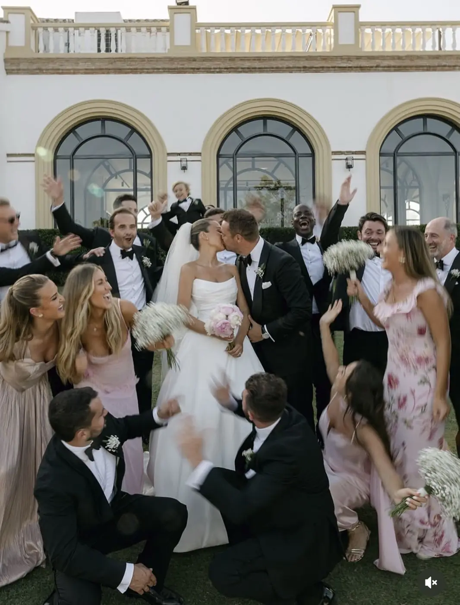
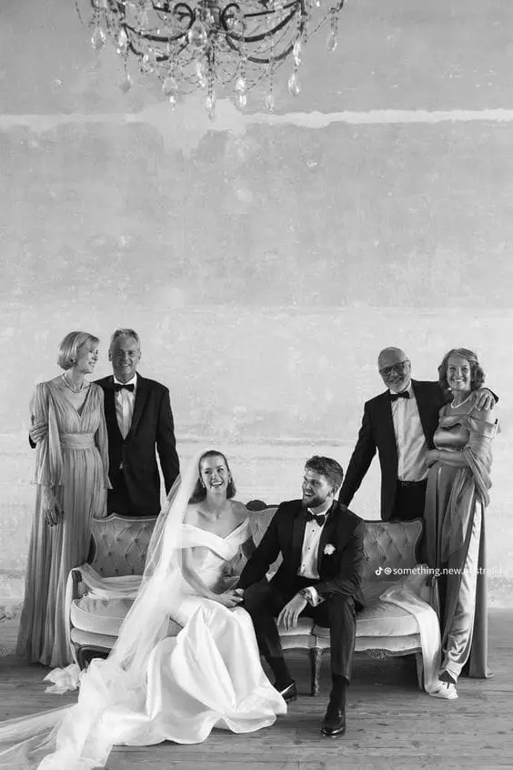
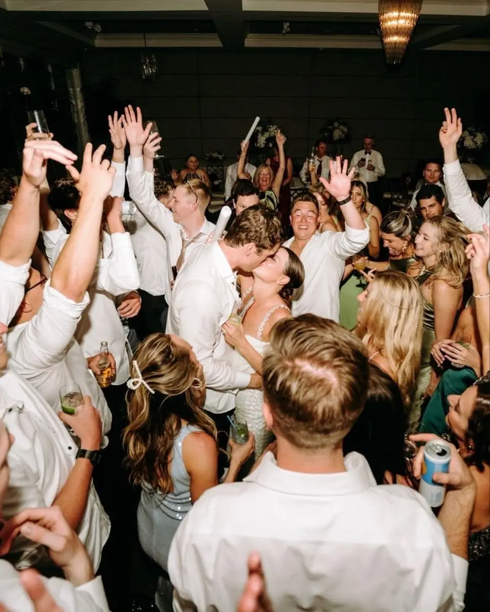

Managing family personalities during wedding preparations can quickly become a real challenge. Planning a wedding is a wonderful adventure, but it is also emotionally intense. Between family traditions, parents' sometimes differing expectations and everyone's sensitivities, tensions often arise when important decisions have to be made.
As a wedding planner in Nouvelle-Aquitaine, I help many couples in Bordeaux and the surrounding region navigate these delicate situations with diplomacy. The goal is clear: planning the wedding should remain a time of pleasure and sharing, not a source of stress or family conflict.
Disagreements may concern the choice of venue, the guest list, the budget, religious or cultural traditions, or even seemingly trivial details such as the decor or the seating plan. Behind these discussions there are often deep emotional stakes: a wish to pass something on, a need for recognition or a desire to take an active part in a unique event. Understanding these dimensions makes for a calmer, more constructive approach.
With professional strategies and practical tools, conflicts can be anticipated before they take hold. Setting clear rules from the start, defining a precise budget, organising structured catch-ups and communicating kindly are particularly effective levers.
In this guide, you will find practical advice, sample phrases to defuse tension and proven solutions for handling strong personalities and preserving family harmony. Because a successful wedding does not rest on flawless organisation alone: it is also built on respect, listening and balance between everyone's sensitivities.
Understanding family dynamics
Understanding family dynamics is an essential step before making decisions during wedding preparations. Looking at this early on helps you anticipate sensitivities and stop certain discussions turning into tension.
It is important to establish clearly who is paying for what, identify the traditions that matter to each family, spot any existing tensions and know who needs to feel involved in the planning. Clarifying these points from the start provides a reassuring framework and limits misunderstandings caused by unspoken expectations.
In Bordeaux, as elsewhere in Nouvelle-Aquitaine, weddings often bring together several generations with different visions of the event. Some families favour a traditional wedding, attached to classic codes and established rituals, while others opt for a more modern approach focused on personalisation and creativity.
Crucial choices such as a religious or celebrant-led ceremony, a very formal or more festive reception, a large guest list or an intimate format can become points of disagreement. Behind these preferences there are often deep values: cultural heritage, symbolic attachment or a wish to honour family history.
Taking the time to listen to everyone, without giving up the couple's own wishes, is fundamental. The aim is not to please everyone at all costs, but to find a respectful balance. Understanding these dynamics from the start helps prevent conflict and build a harmonious wedding that reflects the couple's identity first and foremost, while taking family sensitivities into account.
Situation 1: Your parents want to decide for you
A common situation during wedding preparations arises when parents want to make certain decisions for you. The choice of venue, the number of guests, the caterer or even the type of ceremony can quickly cause tension if everyone expresses their preferences too forcefully.
Behind this attitude there is often a positive intention: a wish to help, a desire to pass on traditions or a sense of legitimacy when they are contributing financially. Even so, it is essential to remember that this wedding is yours.
An effective diplomatic tip is to give your parents a specific role, channelling their involvement while keeping your freedom to decide. Rather than rejecting a suggestion outright, it is better to choose positive, structured communication.
For example, you could say:
"We love your idea. We'd like to keep the final decision, but it would mean a lot if you could help us with the wines, the day-after brunch or the accommodation."
By assigning a clear, concrete task, you turn a potential source of conflict into constructive collaboration. Your loved ones feel valued and involved, while respecting your boundaries.
The key is to set clear but kind limits from the start. The earlier the framework is defined (budget, guest list, desired style), the less outside interventions are likely to cause frustration. With calm communication, appreciation and a smart division of responsibilities, it is entirely possible to keep your independence while maintaining a peaceful atmosphere throughout the preparations.


Situation 2: Disagreement over the guest list
Another common situation during wedding preparations is disagreement over the guest list. Parents often want to invite friends, colleagues or acquaintances you barely know. Without a clear framework, these requests can quickly create tension and a sense of unfairness.
The guest list is not just a question of relationships: it is directly linked to the budget, the venue capacity and the atmosphere you want (an intimate wedding or a large reception). Every extra person affects the overall cost and the balance of the event.
A professional tip is to set a clear framework from the start to manage everyone's expectations. For example, you can:
- Set a maximum number of guests based on the venue and budget.
- Share invitations fairly between the families.
- Make it clear that anyone added must be balanced by someone removed elsewhere.
A sample phrase might be:
"We understand these people matter to you. Our maximum capacity is 120 guests, so if we add someone, we'll need to remove someone else."
This factual approach moves the discussion away from emotion and towards an objective, practical framework. You are not refusing the request on principle; you are simply explaining the concrete constraints.
It can also help to create a main list and a reserve list, used only if someone declines. This reassures the families while keeping control of the final number of guests.
The key remains consistency and kind firmness. The earlier the rules are set and the more fairly they are applied, the less they will be challenged. By establishing clear, shared limits, you preserve family harmony and make planning the wedding calmer and more enjoyable for everyone.


Situation 3: Imposed traditions vs a modern wedding
At some weddings in Nouvelle-Aquitaine, tension can arise between family traditions and the couple's wish for a modern or celebrant-led ceremony. These differences do not reflect a lack of respect, but rather a difference in vision: on one side, attachment to inherited rituals; on the other, a desire for personalisation and freedom.
Some families may want a religious ceremony, well-established customs or specific formal moments, while the couple imagines a more contemporary, intimate or symbolic celebration. Without dialogue, this contrast can quickly lead to misunderstanding.
The diplomatic tip is to include traditions symbolically without transforming the whole event. It is not about giving up your vision, but about making room for balance. For example:
Include a traditional ritual in a personalised ceremony.
Play a meaningful family song at a key moment (entrance, signing, first dance).
Set aside a speech for a parent to honour family heritage and history.
Highlight a discreet cultural symbol in the decor or the running order.
A sample phrase for this situation could be:
"We'd like to keep our vision, but we'd love to include this symbol at a key moment for you."
This shows that you are listening while holding your course. It honours the importance of family without giving way on what matters most: your shared project.
The aim is to create a respectful balance between heritage and modernity. By staying open, explaining your choices calmly and offering targeted compromises, you preserve family harmony while building a wedding that truly reflects who you are.
Situation 4: Tension between family members
Another delicate situation during wedding preparations is tension between family members, often linked to divorces, old conflicts or lingering rivalries. If not anticipated, these tensions can quickly affect the atmosphere and cause the couple unnecessary stress.
To keep a calm atmosphere, there are concrete, effective solutions:
- A strategic seating plan: seat guests so as to avoid direct confrontation. Separating people who might clash limits friction and keeps meals and entertainment running smoothly.
- Separate spaces: during the cocktail hour or the evening, set up several welcoming areas where everyone can feel at ease and enjoy the party without forced proximity to relatives they are at odds with.
- A point of contact: appoint a witness, a trusted relative or your wedding planner to handle requests, questions or any incidents. This person becomes the central contact, allowing the couple to stay focused on their day.
- Neutral, factual communication: answering requests and questions objectively, without taking sides, helps prevent misunderstandings and avoids worsening existing conflicts.
The aim is not to resolve family conflicts, but to make sure they do not affect your day and that the wedding remains a moment of shared joy for everyone. With thoughtful planning, attention to where guests are placed and controlled communication, even the oldest tensions can be neutralised, ensuring a harmonious, serene atmosphere from start to finish.
A professional method for avoiding conflict
To avoid conflict during wedding preparations, it is essential to adopt a professional, structured method. This approach turns a potentially stressful process into an organised, harmonious and enjoyable experience for everyone.
The first step is to set a clear framework from the start: define your vision of the wedding, your budget and the number of guests. The more precise these are and the earlier they are shared, the less room there is for misunderstandings or conflicting requests.
Next, it is important to communicate as a couple, always speaking with one voice to family and friends. This unity strengthens your position and prevents mixed messages from causing tension or confusion.
You can also involve your loved ones without giving in: entrusting them with specific responsibilities values their participation while protecting your main choices. For example, a parent could take care of selecting the wines, the floral decor or coordinating activities for the day-after brunch. This channels their involvement constructively.
In some situations, delegating certain tasks can be very helpful. A wedding planner acts as a diplomatic buffer, able to rephrase requests, ease tension and suggest elegant compromises. This expertise protects the couple from stress and ensures smooth, respectful communication with everyone involved.
In Bordeaux and throughout the region, I help many couples keep the planning of their wedding a time of joy and serenity, while respecting family expectations and maintaining a harmonious atmosphere from beginning to end.
This professional method rests on anticipation, communication and structure: three essential pillars to make the preparations as enjoyable as the celebration itself.
Printable mini guide: managing personalities
To help couples manage family personalities and avoid tension, here is a practical, printable mini guide to keep close at hand. Start by defining your priorities as a couple, so you know what truly matters for your day and stay aligned in the face of your loved ones' expectations. Then list your non-negotiables, the decisions that stay between the two of you, such as the venue, the suppliers or the style of the reception, to set clear limits and avoid unwanted interference.
Also identify the sensitive topics that could cause conflict, such as the guest list, family traditions, the speeches or the seating plan, and prepare diplomatic phrases to communicate your choices tactfully. For example: "We love your idea, but we'd like to keep the final decision and involve you in [a specific task]" or "We understand this matters to you; our capacity is limited, so we'll need to balance it against other choices."
Finally, it can be helpful to appoint a mediator for the day, whether a witness, a wedding planner or a trusted relative, to handle delicate situations and ensure a harmonious, peaceful day for everyone. By following these steps, you have a concrete tool to anticipate tension, preserve family balance and keep the planning of your wedding a time of pleasure and sharing.


Why support makes all the difference
Why does support really make the difference? A successful wedding does not depend only on the decor, the venue or the caterer, but on the emotional balance of everyone involved in the day. Every decision, every meeting and every detail can cause stress if it is not guided with clarity and kindness.
As a wedding planner in Nouvelle-Aquitaine, my role goes beyond logistics: it is also about defusing tension, structuring decisions calmly, protecting your relationship from family pressure and ensuring a peaceful atmosphere throughout the preparations and on the day itself.
With professional support, every moment becomes more harmonious. The couple can focus on what matters, share unique moments with their loved ones and fully enjoy their day, with stress and surprises kept to a minimum. Support turns planning a wedding into a smooth, serene and memorable experience.
In short...
Managing family personalities and tension during wedding preparations is just as important as choosing the venue or the decor. With clear communication, rules set from the start and diplomatic strategies suited to each situation, these challenges can become moments of joy and sharing. A wedding planner's support not only structures the planning, but also defuses conflict, preserves family harmony and keeps the couple at the centre of their choices. By anticipating tension and taking a professional approach, your wedding in Bordeaux or the surrounding region becomes a serene event, memorable and entirely your own.
Lovely Day Event offers several services
Wedding planning
I will be involved at every stage of your preparations and guide you through your choices. I come up with ideas so that your wedding looks like no one else's.
Wedding styling
Creative and passionate, I am a certified Wedding Designer and I create a scenographic atmosphere that matches your wedding theme.
On-the-day coordination
I will be the conductor, managing your suppliers, the set-up of your decor and the flow of your beautiful day.